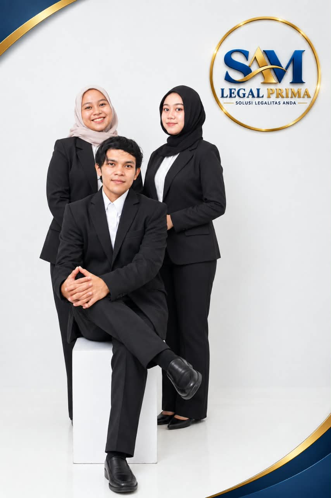

Sejak 2019 · SLP Group
Legalitas usaha yang lebih jelas. Bisnis yang lebih siap.
SAM Legal Prima membantu perusahaan dan pelaku usaha dalam pengurusan legalitas, perizinan, sertifikasi, serta kebutuhan administratif profesional secara terarah.

Solusi Legalitas Anda
Tentang Kami
Mitra untuk kebutuhan legalitas dan sertifikasi usaha.
“Lebih dari sekadar pengurusan dokumen — kami membantu membuat proses terasa lebih terarah.”
SAM Legal Prima by SLP Group merupakan perusahaan yang bergerak di bidang jasa legalitas usaha, perizinan, sertifikasi, dan layanan pendukung profesional bagi perusahaan maupun pelaku usaha di Indonesia.
Didirikan sejak tahun 2019, kami hadir untuk membantu kebutuhan administrasi, legalitas, perizinan, dan sertifikasi yang diperlukan dalam menjalankan serta mengembangkan usaha secara lebih tertib dan profesional.
Kenali SAM Legal Prima →Layanan
Solusi sesuai kebutuhan bisnis Anda.
Mulai dari pendirian badan usaha sampai sertifikasi dan layanan pendukung.
Legalitas Usaha
PT, PT Perorangan, CV, PT PMA, Yayasan, Perkumpulan, Koperasi, dan Firma.
Lihat layanan →Konstruksi
SKK Konstruksi dan SBU Konstruksi untuk kebutuhan tenaga maupun badan usaha.
Lihat layanan →Sertifikasi
Profesi, ketenagalistrikan, HACCP, halal, ISO, dan kebutuhan sertifikasi lainnya.
Lihat layanan →Alur Proses
Setiap tahap dibuat lebih mudah dipahami.
Dari konsultasi, pengecekan persyaratan, pengajuan, hingga penerbitan.
Konsultasi
Memahami kebutuhan dan kondisi usaha sebelum proses dimulai.
Verifikasi
Mengecek dokumen dan persyaratan layanan yang dipilih.
Pengajuan
Pengajuan dilakukan ke instansi atau lembaga terkait.
Penerbitan
Dokumen diterbitkan apabila persyaratan terpenuhi dan disetujui.
Mengapa SAM Legal Prima?
Profesional, transparan, dan responsif.
Proses Transparan
Biaya dan alur kerja dijelaskan sejak awal.
Estimasi Terukur
Estimasi disesuaikan dengan jenis layanan.
Dokumen Resmi
Dokumen mengikuti proses penerbitan instansi terkait.
Tim Berpengalaman
Pendampingan untuk beragam kebutuhan usaha.
Instansi Terkait
BNSP, LPJK, PUPR, ESDM, BPJPH, Kemenkumham, dan lainnya.
Butuh Bantuan?
Konsultasikan kebutuhan legalitas usaha Anda.
Hubungi tim SAM Legal Prima untuk pembahasan awal.